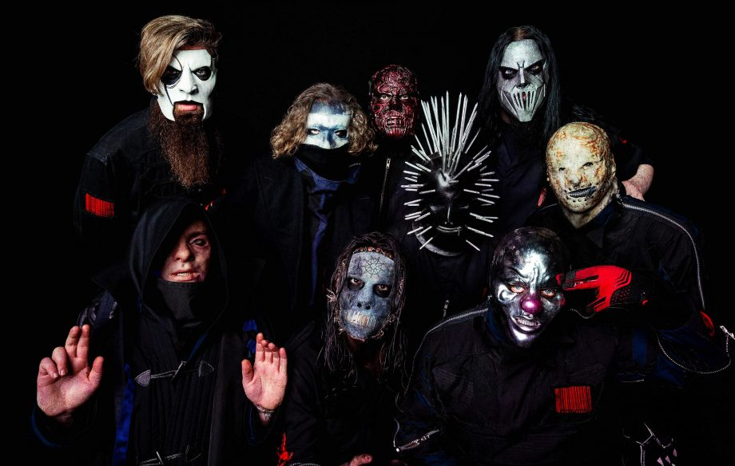

.png)
|
||
|---|---|---|
|
After the recent split of percussionist Chris Fehn, drummer Joey Jordison, and the death of Paul Gray, Slipknot today stick by their 9-man lineup with new members Alessandro Venturella, Jay Weinberg, and "Tortilla Man" whose identity is still not entirely known to the public. All 9 members of the band perform in their unique masks Slipknot changes their masks for every time they record a new album. Jay Weinberg and Alessandro Venturella had to wear identical masks when they first joined the band. The new members' identities were kept a secret until they were committed to recording the band's sixth studio album. This is the first year for "Tortilla Man" as well, whose identity is still being kept hidden from the rest of the public until they're committed to staying for their next album.
 Left to Right: Jim Root, Corey Taylor, Alessandro Venturella, Craig Jones, Mick Thompson, Sid Wilson, Jay Weinberg, Shawn Crahan, and "Tortilla Man" (Identity Unknown) This is an image map. Please click on the faces of each band member to learn more about them. |
||